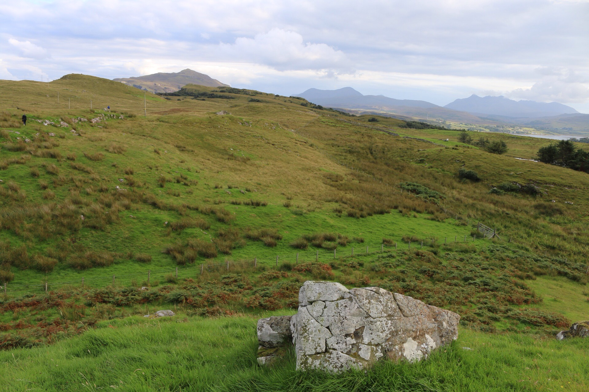

Schottland ist ein Land so vielfaeltig wie man bei seiner groesse nicht glauben kann, von rauen Bergen, Weiden und gewaltigen Kuesten kann man dort alles entdecken. Zudem ist das Land grosszuegig mit Hostels ausgestattet und Wildcampen ist erlaubt. Man kann ohne Planung eine Spannende Reise erleben.
| Tag | Ort | Vorhaben |
|---|---|---|
| 1 | Karlsruhe | Abfahrt Flixbus |
| 2 | Glasgow | Start des West Highland Way |
| 3 | Loch Lohmond | Wanderung durch Nationalpark |
| 4 | Fort William | Sightseeing |
| 5 | Ben Nevis | Bergsteigen |
| 6 | Glennfinnan | Wandern und Campen |
| 7 | Skyefaehre | Strandtag |
| 8 | Portree | Beginn der Nord-Skye Tour |
| 9 | Storr | Wildcampen mit toller Aussicht |
| 10 | Uig | Ausruhen und Busfahrt nach Inverness |
| 11 | Inverness | Sightseeing |
| 12 | Edinburgh | Stadttour |
| 13 | Edinburgh | Arthurs Seat Picknick |
| 14 | Glasgow | Fertigmachen fuer Rueckreise |
| 15 | Karlsruhe | Busfahrt nach Hause |
Fuer den aktuellen Schottland Urlaub sind alle Tage durchgeplant, Buslinien sind ebenfalls gewaehlt. Es fehlt nur noch die Auswahl an Dingen welche man dringend brauch, auf dieser Seite findet man die wichtigsten Sachen. Fuer Anregungen und aehnliches bitte Kontakt aufnehmen, um eine angenehme Reise zu gewaehrleisten. Der aktuelle Preis der Reise betraegt circa 300 Euro. Um weitere Informationen zu erlangen bitte Visitscotland besuchen.
